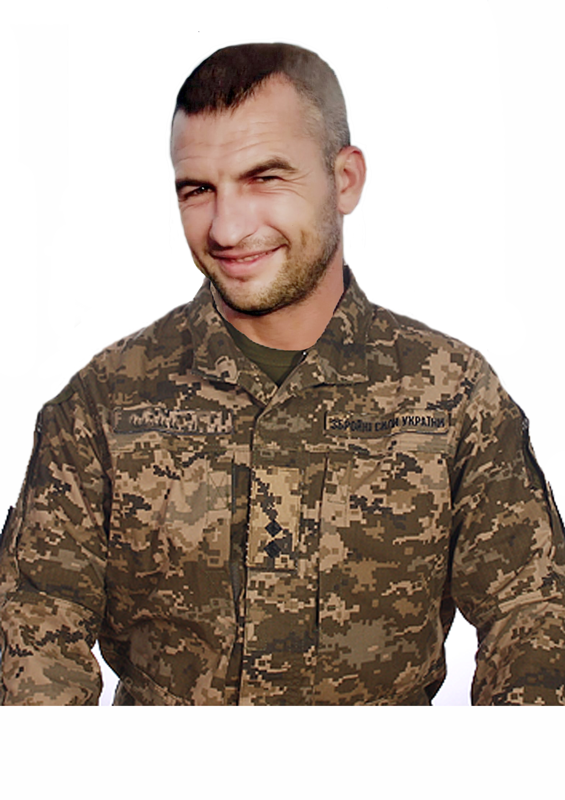
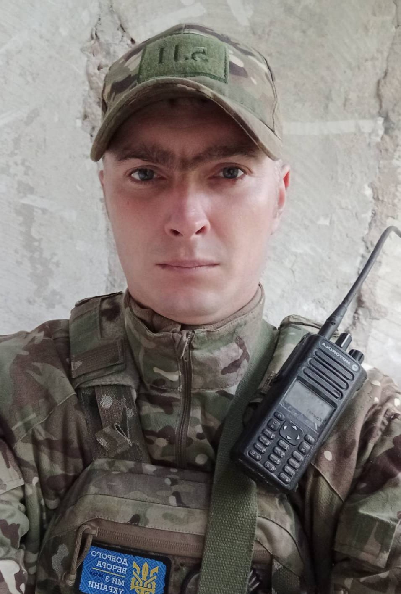
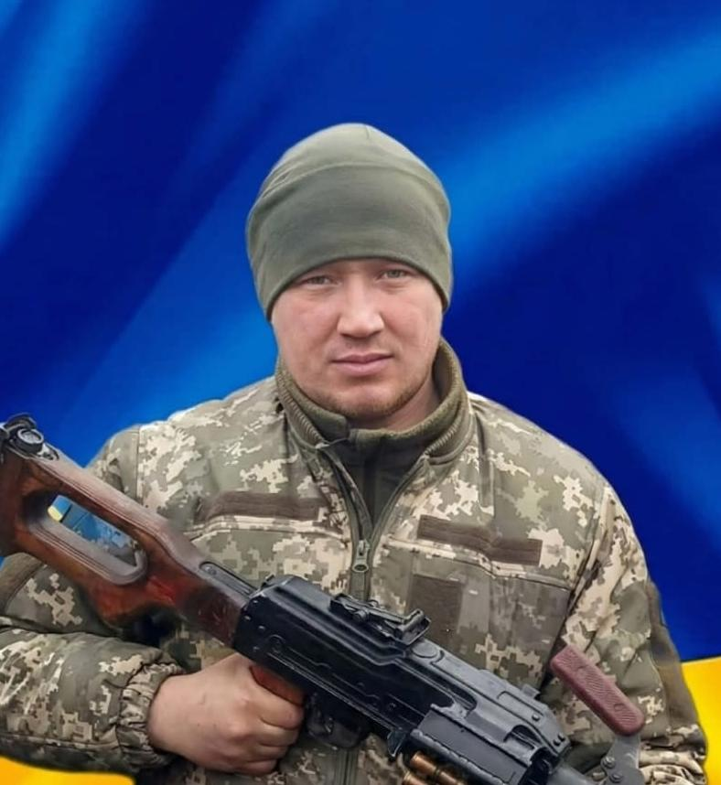
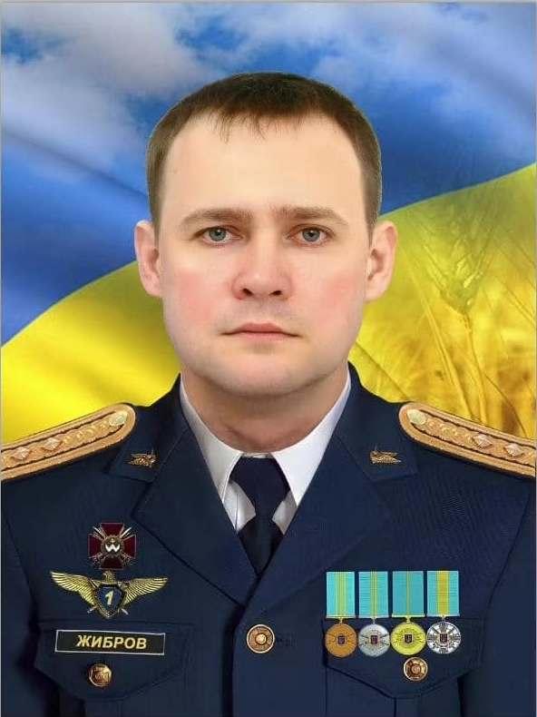
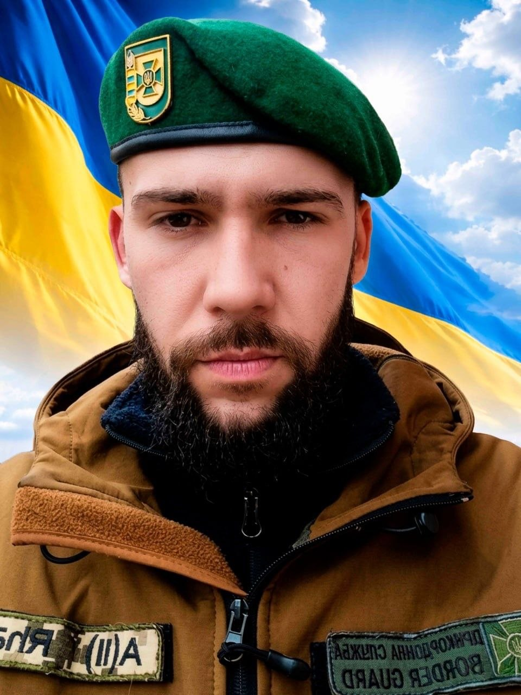
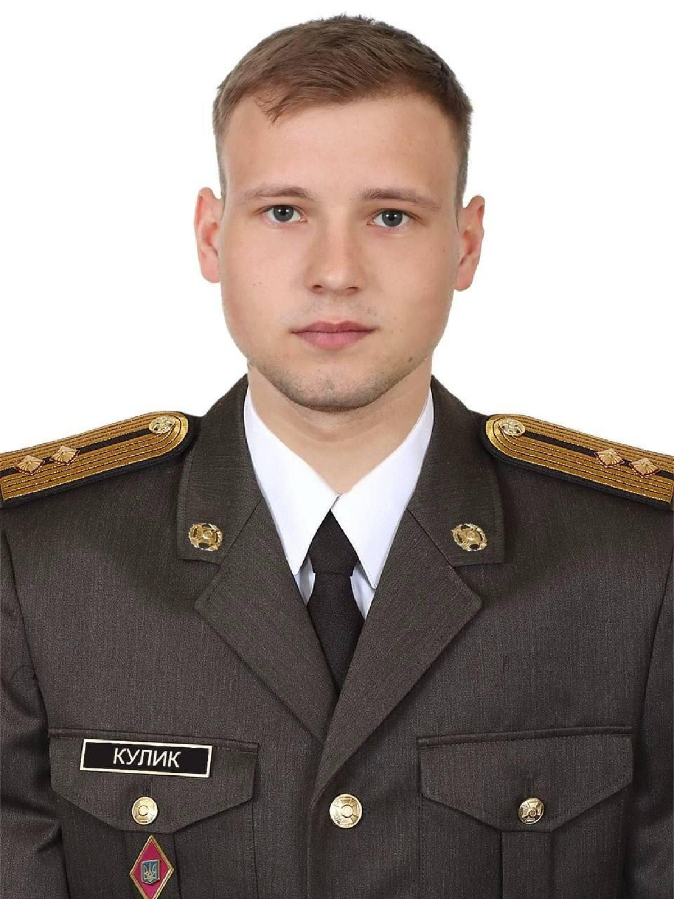
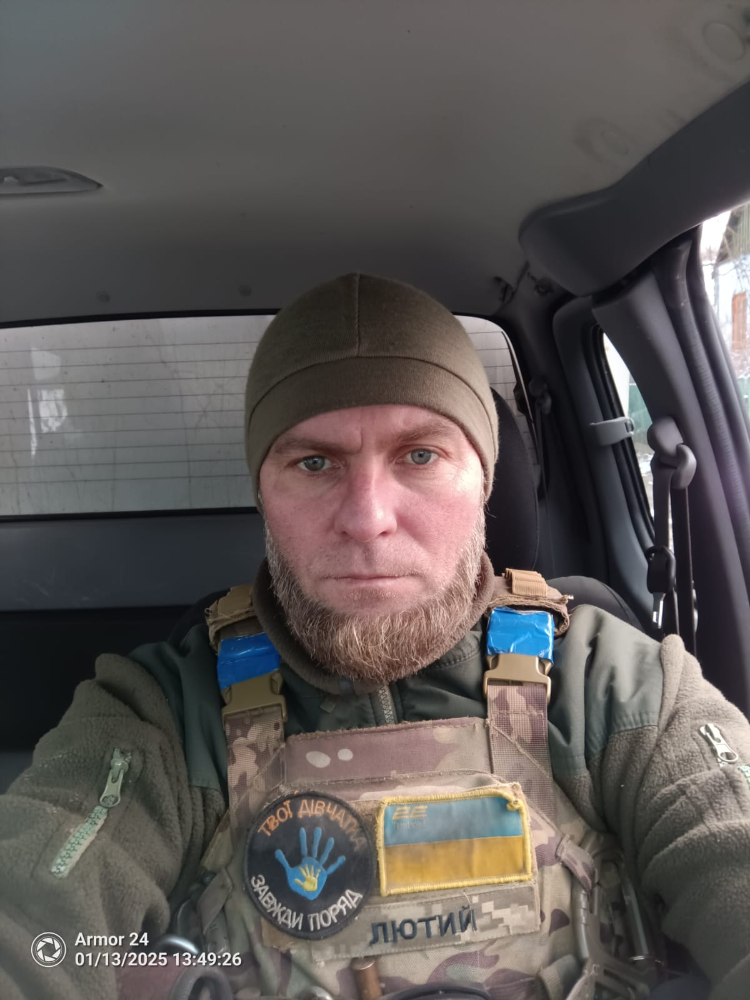
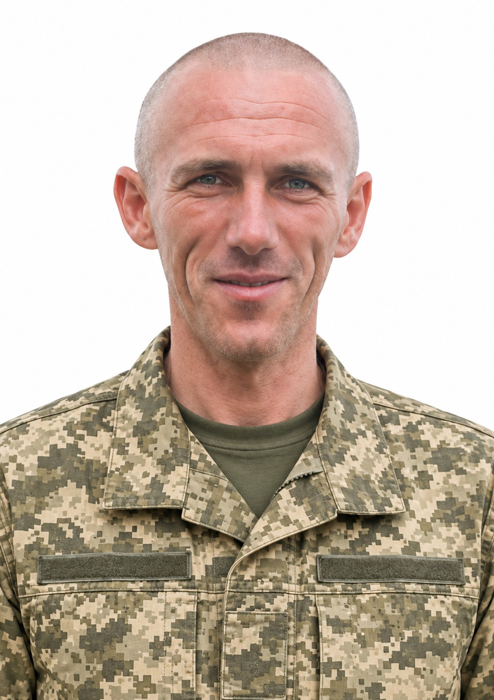
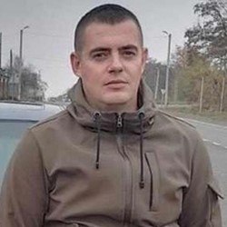
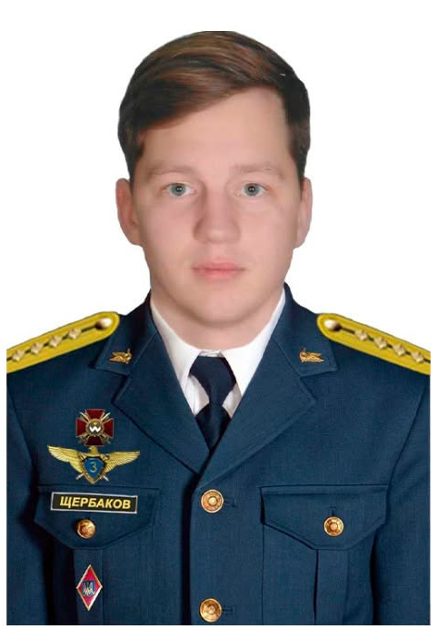

🕯️
Бахітов Марат Фларитович
Розвідник | «Бах»
Чаплинська громада
10.07.1987 — 13.12.2022
Пам'ятна сторінкаІмена, обличчя та подвиги Захисників і Захисниць з усіх громад нашого району

Розвідник | «Бах»
Чаплинська громада
10.07.1987 — 13.12.2022
Пам'ятна сторінка
Захисник України
Чаплинська громада
12.08.1988 — 11.06.2023
Пам'ятна сторінка
Сержант | «Старшина»
Чаплинська громада
21.03.1994 — 26.12.2022
Пам'ятна сторінка
Герой України | Полковник
Загинув у небі над Чаплинкою
09.07.1979 — 24.02.2022
Пам'ятна сторінка
Старшина підрозділу
Чаплинська громада
07.10.1997 — 11.12.2024
Пам'ятна сторінка
Солдат
Чаплинська громада
27.03.1992 — 03.11.2024
Пам'ятна сторінка
Командир взводу
Чаплинська громада
13.01.2004 — 11.04.2026
Пам'ятна сторінка
Старший сержант
Чаплинська громада
25.06.1986 — 17.03.2026
Пам'ятна сторінкаСолдат | Навідник
Хрестівська громада
10.08.2002 — 01.02.2023
Пам'ятна сторінка
Молодший сержант
Чаплинська громада
12.09.1989 — 06.09.2026
Пам'ятна сторінка
Старший солдат | «Сокол»
Хрестівська громада
10.08.1995 — 08.09.2023
Пам'ятна сторінка
Капітан | Військовий льотчик
Загинув у небі Херсонщини
25.02.1996 — 24.02.2022
Пам'ятна сторінка